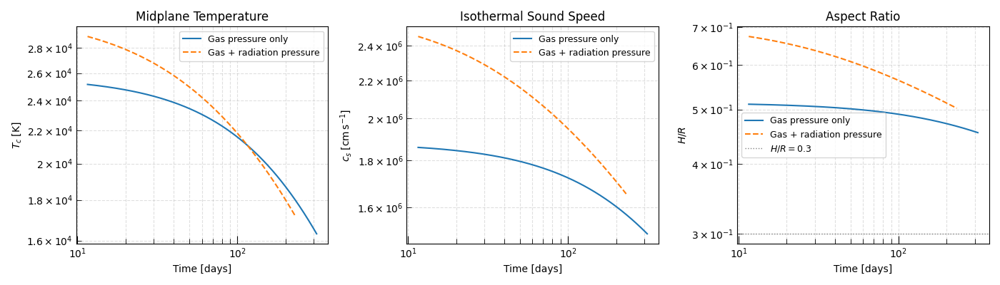
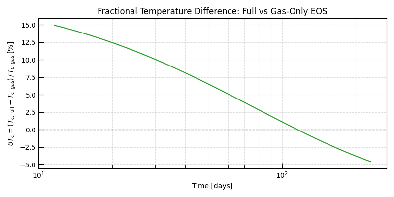
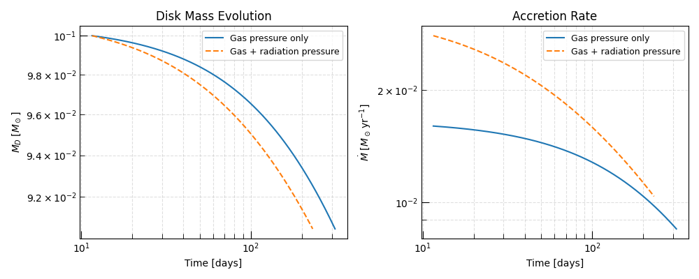

Note
Go to the end to download the full example code.
Gas Pressure vs. Full Pressure — Equation-of-State Comparison#
Triceratops provides two one-zone disk closures that differ only in the treatment of the equation of state (EOS):
GasPressureDisk— ideal gas pressure only, with an analytic temperature solve.FullPressureDisk— combined gas and radiation pressure, with an iterative temperature solve (bracket expansion + Brent’s method) at every time-step.
This example compares the two models side-by-side under identical initial conditions and runtime parameters. Its aim is twofold:
Validate the analytic limit — in the gas-pressure-dominated regime the two models must agree.
Quantify radiation-pressure corrections — at high midplane temperatures (high accretion rate, low surface density) radiation pressure contributes a non-negligible fraction of the total pressure, leading to a higher effective sound speed and therefore a different thermodynamic equilibrium.
The Radiation Pressure Correction#
The full-pressure EOS is
which reduces to the ideal-gas form when the radiation term is negligible. Substituting \(\rho = \Sigma\Omega / (\sqrt{2\pi}\,c_s)\) from the vertical hydrostatic equilibrium, the sound speed must be solved self- consistently at each \(T_c\) trial — hence the iterative root-find.
The ratio of radiation pressure to gas pressure is
which grows rapidly with temperature. Radiation pressure becomes important when \(\beta^{-1} \gtrsim 0.1\), which occurs in the early (high-\(\dot M\)) phase and at high \(\alpha\).
Because the full-pressure sound speed is larger than the gas-only value for the same \(T_c\), the full-pressure closure implies a higher equilibrium \(T_c\) for the same \((\Sigma, \Omega)\) — and correspondingly a faster viscous timescale and more rapid disk evolution.
See Also#
Hint
For details on the closure equations and how they are solved see One-Zone Accretion Disk Models: Theory.
Setup#
import matplotlib.pyplot as plt
import numpy as np
from astropy import constants as const
from astropy import units as u
from triceratops.dynamics.accretion.one_zone import (
GasPressureDisk,
FullPressureDisk,
)
from triceratops.utils.plot_utils import set_plot_style
set_plot_style()
Running Both Models#
Both integrations are run over the same time span with the same step limit. The full-pressure model takes slightly longer per step because it solves a non-linear root-finding problem for \(T_c\) at every time-step.
t_span = (1.0e6 * u.s, 1.0e9 * u.s)
max_steps = 100_000
run_params = {"M_BH": M_BH, "R_in": R_in, "alpha": alpha}
result_gas = disk_gas.solve(ic, run_params, t_span, max_steps=max_steps)
result_full = disk_full.solve(ic, run_params, t_span, max_steps=max_steps)
print(f"Gas-pressure model: {result_gas.n_steps:,} steps")
print(f"Full-pressure model: {result_full.n_steps:,} steps")
Gas-pressure model: 100,000 steps
Full-pressure model: 100,000 steps
Comparing Thermodynamic Quantities#
The clearest signature of the radiation pressure correction is in the midplane temperature \(T_c\). Because the full-pressure EOS augments the pressure support beyond the ideal-gas value, vertical hydrostatic equilibrium is satisfied at a higher temperature.
Below we compare \(T_c\), \(H/R\), and the effective sound speed \(c_s\) between the two models.
data_gas = result_gas.data
data_full = result_full.data
fig, axes = plt.subplots(1, 3, figsize=(14, 4))
# ---- Midplane temperature ----
axes[0].loglog(
data_gas["t"].to(u.day).value,
data_gas["T_c"].to(u.K).value,
label="Gas pressure only",
ls="-",
)
axes[0].loglog(
data_full["t"].to(u.day).value,
data_full["T_c"].to(u.K).value,
label="Gas + radiation pressure",
ls="--",
)
axes[0].set_xlabel("Time [days]")
axes[0].set_ylabel(r"$T_c\;[\mathrm{K}]$")
axes[0].set_title("Midplane Temperature")
axes[0].legend(fontsize=9)
axes[0].grid(True, which="both", ls="--", alpha=0.4)
# ---- Sound speed ----
axes[1].loglog(
data_gas["t"].to(u.day).value,
data_gas["c_s"].to(u.cm / u.s).value,
ls="-",
label="Gas pressure only",
)
axes[1].loglog(
data_full["t"].to(u.day).value,
data_full["c_s"].to(u.cm / u.s).value,
ls="--",
label="Gas + radiation pressure",
)
axes[1].set_xlabel("Time [days]")
axes[1].set_ylabel(r"$c_s\;[\mathrm{cm\,s^{-1}}]$")
axes[1].set_title("Isothermal Sound Speed")
axes[1].legend(fontsize=9)
axes[1].grid(True, which="both", ls="--", alpha=0.4)
# ---- Aspect ratio H/R ----
axes[2].loglog(
data_gas["t"].to(u.day).value,
data_gas["H_over_R"].value,
ls="-",
label="Gas pressure only",
)
axes[2].loglog(
data_full["t"].to(u.day).value,
data_full["H_over_R"].value,
ls="--",
label="Gas + radiation pressure",
)
axes[2].axhline(0.3, ls=":", color="grey", lw=1.0, label=r"$H/R = 0.3$")
axes[2].set_xlabel("Time [days]")
axes[2].set_ylabel(r"$H/R$")
axes[2].set_title("Aspect Ratio")
axes[2].legend(fontsize=9)
axes[2].grid(True, which="both", ls="--", alpha=0.4)
plt.tight_layout()
plt.show()

Relative Temperature Difference#
To quantify the magnitude of the EOS correction we interpolate both temperature tracks onto a common time grid and compute the fractional difference
The correction is largest at early times (high \(\dot M\), elevated \(T_c\)) and converges to zero as the disk cools into the gas-pressure regime.
t_gas = data_gas["t"].to(u.s).value
t_full = data_full["t"].to(u.s).value
# Common evaluation grid — must lie within both integration intervals.
t_common = np.geomspace(
max(t_gas[1], t_full[1]),
min(t_gas[-1], t_full[-1]),
500,
)
Tc_gas_interp = np.interp(t_common, t_gas, data_gas["T_c"].to(u.K).value)
Tc_full_interp = np.interp(t_common, t_full, data_full["T_c"].to(u.K).value)
delta_Tc = (Tc_full_interp - Tc_gas_interp) / Tc_gas_interp
fig, ax = plt.subplots(figsize=(8, 4))
ax.semilogx(t_common / 86400, delta_Tc * 100, color="C2")
ax.axhline(0, ls="--", color="grey", lw=1.0)
ax.set_xlabel("Time [days]")
ax.set_ylabel(r"$\delta T_c = (T_{c,\rm full} - T_{c,\rm gas})\,/\,T_{c,\rm gas}\;[\%]$")
ax.set_title("Fractional Temperature Difference: Full vs Gas-Only EOS")
ax.grid(True, which="both", ls="--", alpha=0.4)
plt.tight_layout()
plt.show()

Disk Mass and Accretion Rate#
Because the full-pressure disk is slightly hotter and therefore slightly more viscous, it accretes faster in the early phase. By the end of the integration both models should produce very similar accretion histories, as the disk enters the gas-dominated, low-temperature regime where the two closures converge.
fig, axes = plt.subplots(1, 2, figsize=(10, 4), sharex=True)
# Disk mass
axes[0].semilogy(
data_gas["t"].to(u.day).value,
data_gas["M_D"].to(u.Msun).value,
label="Gas pressure only",
)
axes[0].semilogy(
data_full["t"].to(u.day).value,
data_full["M_D"].to(u.Msun).value,
ls="--",
label="Gas + radiation pressure",
)
axes[0].set_xlabel("Time [days]")
axes[0].set_ylabel(r"$M_D\;[M_\odot]$")
axes[0].set_title("Disk Mass Evolution")
axes[0].legend(fontsize=9)
axes[0].grid(True, which="both", ls="--", alpha=0.4)
# Accretion rate
axes[1].loglog(
data_gas["t"].to(u.day).value,
data_gas["mdot"].to(u.Msun / u.yr).value,
label="Gas pressure only",
)
axes[1].loglog(
data_full["t"].to(u.day).value,
data_full["mdot"].to(u.Msun / u.yr).value,
ls="--",
label="Gas + radiation pressure",
)
axes[1].set_xlabel("Time [days]")
axes[1].set_ylabel(r"$\dot{M}\;[M_\odot\,\mathrm{yr}^{-1}]$")
axes[1].set_title("Accretion Rate")
axes[1].legend(fontsize=9)
axes[1].grid(True, which="both", ls="--", alpha=0.4)
# sphinx_gallery_thumbnail_number = -1
plt.tight_layout()
plt.show()

Total running time of the script: (0 minutes 2.166 seconds)